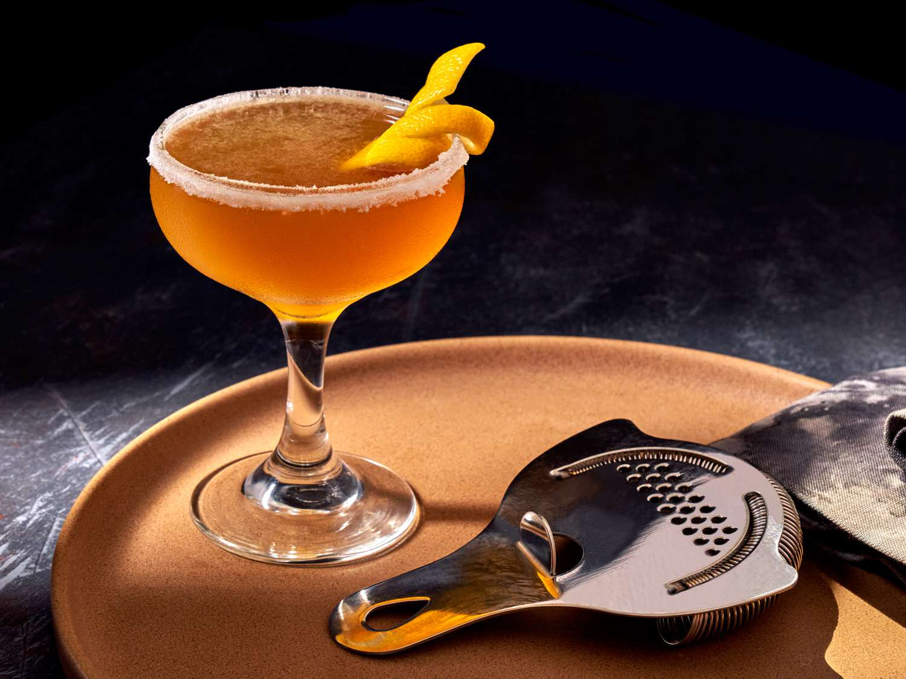

Sidecar Cocktail

Ingredienser
1 Porsjon
3. cl brandy eller cognac
1.cl Cointreau
1,5. cl Sitronsaft
Slik gjør du det:
Helles i shaker med mye is, ristes i 10 sek, siles over i et avkjølt cocktailglass.